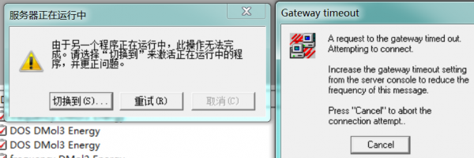
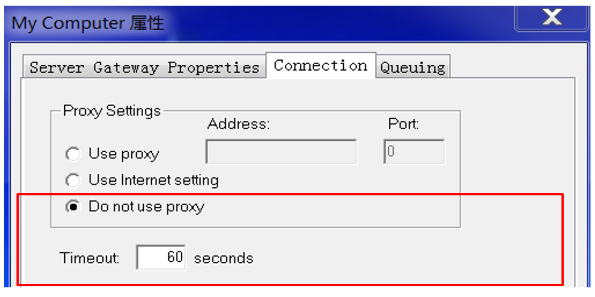
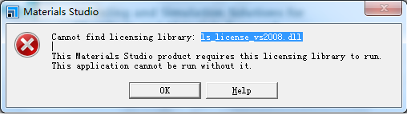
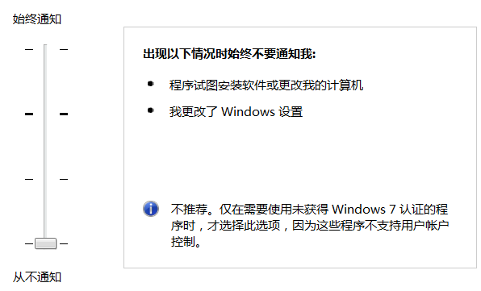
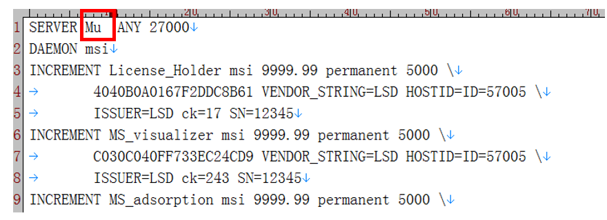

Errors
Timeout Error

- 解决方法:
Tools->Server Console, 打开 Server Console面板，Server Gateways->My Computer,右键属性，修改如下两项。

- 返回
Server Gateways->My Computer，右键Test Gateway，测试Gateway是否正常。
ls_license_vs2008.dll not found

- 解决方法: 找到文件夹
C:\Program Files (x86)\Common Files\Accelrys\LicensePack （64位） 或 C:\Program Files (x86)\Common Files\Accelrys\LicensePack （32位）, 将其所有的dll文件复制到 C:\Program Files (x86)\Accelrys\Materials Studio 8.0\bin目录下。32位系统类似。
- 不要使用360清理系统，这个清理比较激进，容易过度清理掉一些库文件。如果想清理的话，推荐CCleaner。
Win10关键字不在字典中
- 可能与Microsoft .NET Framework 的版本更新有关，卸载掉现在电脑上安装的.NET 4.6.X，在微软官网上下载并安装.NET 4.5.2。
- 或者安装更新版本的Materials Studio.
License Error
控制面板(Win7)/设置(Win10)->搜索UAC->更改用户账户控制->调到最低。

- 我的电脑->右键属性->找到计算机名。
- 修改msilicense.dat，修改计算机名。

- 以管理员身份运行
License Administrator->Install License， 找到msilicense.dat的路径，点击install,等待安装完成。
安装失败且无法卸载问题
- 可能是安装不完整。对于64位系统，很可能是
Accelrys Materials Studio 7.0 (x64 Server).msi和Accelrys Materials Studio Gateway Service (x64).msi未安装完整，将这两个再装一次，然后再全部卸载，再重装。
MS Examples
Dmol Tansport
- File->Import,Sturctures-metals.xsd,
- Build->Surfaces->Cleave Surfaces, select 1 1 1 for Cleave plane (h k l) , select 12 for Thickness.
- Build->Crystals->Build Vacuum Slab. select 7 for Vacuum Thickness,0 for slab position.
- Build->Symmetry->Lattice parametres->Advanced, Select “C along Z, B in YZ plane”
- Right click->Display Style->Lattice,Select original for Style.
- Move 12 layers along Z direction, let 6 layers in cell and 6 layers out of cell.
- Build->Symmetry->Redifine Lattice, Select " 1 0 0 0 1 0 0 0 1"
- Build->Symmetry->Redifine Lattice, Select " 2 1 0 0 2 0 0 0 1"
- Build->Symmetry->Nonperiodic SuperStructure.
- Build Transport Device->Build Electrode, Buid for +Z and -Z.
- Modify->Constraints, fix the six layers as Electrode.
- copy B40, and paste it between two slab (6 layers).
- optimize, get energy .vs width. many widths.